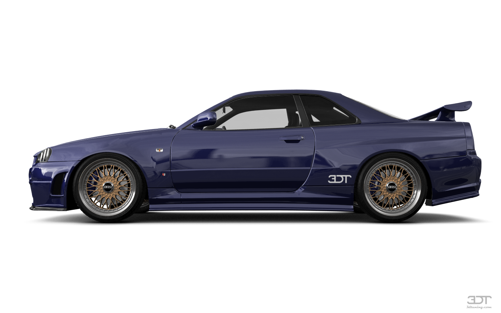
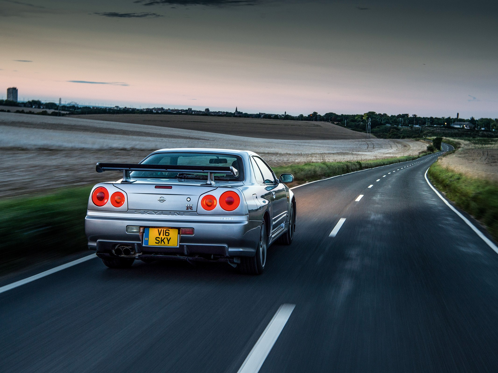
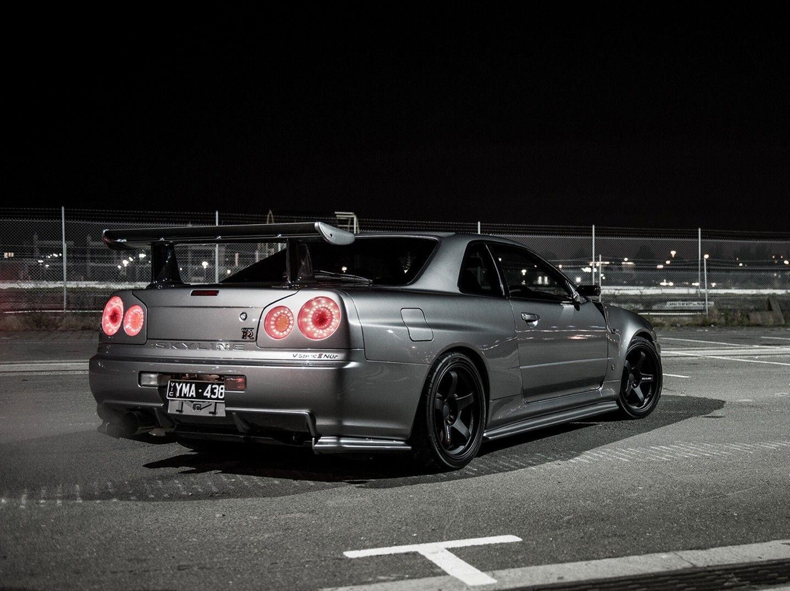

Nissan Skyline GT-R — одна из самых продвинутых японских машин с точки зрения инженерии. Благодаря своим гоночным заслугам и родословной навсегда застолбил почетное место в зале славы автомобилестроения.
Японская легенда

Несмотря на свою долгую и богатую историю, он отлично сохранился.
Автомобиль оснащен только уместными и легальными модификациями, повышающими производительность и предающим машине яркий и уникальный внешний вид.
Проверен в бою

Данный GT-R показал свое превосходство в профессиональных гоночных заездах

Несмотря на высокую мощность автомобиль не вызывает проблем у водителя техническими неполадками и всегда пригоден к езде, будь это город или трек
Технические характеристики
Мощность
Разгон до 100 км/ч
Крутящий момент
Тип КПП
Объем двигателя
Расход топлива
Покрышки и диски
480 л. с.
4.0 сек
602 Нм
Механическая
3.0 л
15.6 л/100 км
R18/R18